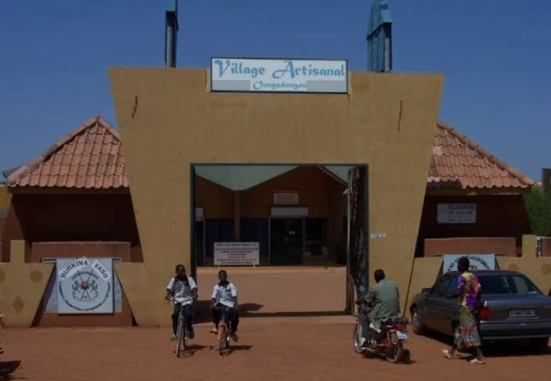

Description
Bienvenue au Village Artisanal de Ouagadougou ! Situé en plein centre de la capitale, ce site emblématique est bien plus qu’un simple marché : c’est un véritable carrefour des savoir-faire où se rencontrent des centaines d’artisans venus des différentes régions du Burkina Faso. Ici, le bruit des marteaux sur le bronze, le rythme des métiers à tisser, les effluves du cuir tanné et les couleurs éclatantes des pagnes tissés racontent, jour après jour, l’histoire d’un patrimoine vivant. Que vous soyez amateur d’art, curieux de cultures ou à la recherche d’un souvenir authentique, le Village Artisanal vous invite à une immersion sensorielle unique au cœur des traditions et de la création contemporaine burkinabè.
Vous y découvrirez entre autres :
- Sculpture sur bois : masques, statuettes, meubles en teck et en iroko.
- Bronze et ferronnerie d'art : fondeurs et forgerons créent bijoux, ustensiles et œuvres contemporaines.
- Textile et teinture : bazin riche, Faso Dan Fani (tissu traditionnel tissé à la main), bogolan (teinture à la boue).
- Cuir et maroquinerie : sacs, ceintures, sandales en cuir de zébu et de chèvre.
- Poterie et céramique : jarres, gargoulettes, sculptures en terre cuite.
- Peinture et arts graphiques : galeries d'art contemporain et ateliers de sérigraphie.
- Bijouterie : or, argent, perles de verre recyclé et pierres semi-précieuses.
Historique et Évolution
-
1960
La naissance d'une ambition
Peu après l'indépendance du Burkina Faso (alors Haute-Volta), le gouvernement du président Maurice Yaméogo cherche à promouvoir l'artisanat local comme moteur de développement économique et de fierté nationale. En 1962, un premier "village artisanal" est créé dans le quartier de Dassasgho, mais il reste modeste et manque de structure.
-
1972
Le déménagement à Goughin
Sous le régime du général Sangoulé Lamizana, un nouveau site plus vaste est choisi dans le quartier de Goughin, alors en périphérie de la ville. Le Village Artisanal de Ouagadougou est officiellement inauguré en 1972. Il compte une trentaine d'ateliers, construits en matériaux locaux (banco, paille, tôle). L'objectif est de regrouper les artisans dispersés dans la ville pour créer un pôle d'attraction touristique.
-
1983-1987
L'ère sankariste et l'essor du "Faso Dan Fani"
La Révolution burkinabè conduit par Thomas Sankara (1983-1987) donne un coup d'accélérateur au village. Sankara fait la promotion du Faso Dan Fani (le "pagne tissé du Faso") comme symbole de souveraineté économique et de libération des importations textiles. Le village devient un lieu de production et de vente privilégié pour ce tissu. De nouveaux ateliers de teinture et de tissage sont construits. Le nombre d'artisans double.
-
1990-2000
Modernisation et ouverture au tourisme
Dans les années 1990, sous Blaise Compaoré, le village est électrifié, doté d'un point d'eau et d'un parking. L'État burkinabè, avec l'appui de l'Union européenne et de l'UNESCO, finance la rénovation des ateliers et la formation des artisans à la gestion et au marketing. Le village devient une étape obligée des tours opérateurs. En 1998, une grande halle d'exposition est inaugurée.
-
2004
Le SIAO et le rayonnement international
Le SIAO (Salon International de l'Artisanat de Ouagadougou), qui se tient tous les deux ans depuis 1984, trouve au Village Artisanal son prolongement naturel. De nombreux artisans du village participent au salon et nouent des contacts avec des acheteurs internationaux. Le village accueille également des résidences d'artistes étrangers.
-
2014-2024
Défis et résilience
La crise sécuritaire (attaques terroristes, baisse du tourisme) à partir de 2015 frappe durement le village. Le nombre de visiteurs étrangers chute de 60 %. Les artisans se tournent vers le marché local et la vente en ligne. Malgré tout, le village reste un lieu d'effervescence créative. En 2022, une coopérative de femmes teinturières est créée, et un espace boutique en ligne est aménagé.
-
Aujourd'hui
Un symbole vivant de l'artisanat burkinabè
Le Village Artisanal de Ouagadougou est plus qu'un marché : c'est un écosystème économique et culturel qui fait vivre directement plus de 500 familles. Il est classé "site d'intérêt touristique national" depuis 2019. Le village accueille chaque année le Festival des Métiers d'Art en février, et des ateliers participatifs pour les écoles et les touristes.